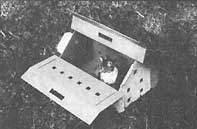
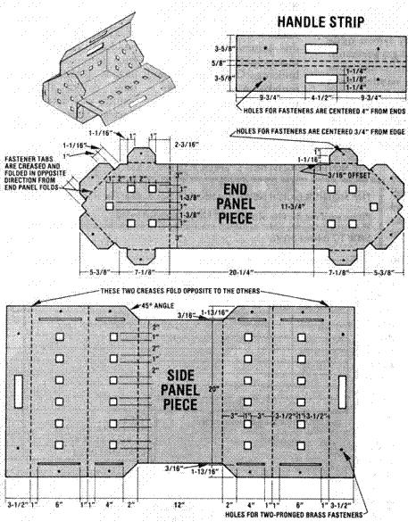

In No. 52, THE Mother Earth News(R) published an article by Kansas veterinarian Randy Kidd about how to restrain a farm animal. Little did we (or Randy) know that this one piece would lead to many more ... yet very few subsequent issues of MOTHER haven't carried Dr. Kidd's words on some facet of livestock care.
This article-marking the second installment of our new series on pet care (which ill usually feature Randy's work)-was prepared by a guest author ... and we think you'll find her idea is a good one.
Anyone who's ever tried to transport a sick or wounded animal in a small automobile can fully appreciate the usefulness of a pet carrier. However, because such a device is likely to be needed only infrequently, many folks are reluctant to acquire one (after all, the cages can be expensive to buy and bulky to store). Well, here's a solution to that problem! The carryall described be low can be disassembled and folded flat for easy storage, and is lightweight, inexpensive, and easy to build.
The "pet case" is constructed from the sort of cardboard that has a single layer of corrugation between two face veneers. (The best source of this material is probably a large, discarded box, such as those that major appliances are delivered in. This container will provide the flat side sheets you'll need to cut out the "pattern pieces" of your toter.)
The carrier is held together by ten 1-1/4"-Iong, two-pronged brass paper fasteners, which are available at office supply stores. Other necessary tools and materials include a utility razor-knife ... a pencil ... a ruler ... a 45' drafter's triangle ... a carpenter's square ... a sharp-pointed awl ... a blunt-pointed tool of some sort ... and white glue.
To begin, draw each of the three illustrated pieces on the cardboard, enlisting the aid of the ruler, triangle, and carpenter's square where necessary. A solid line on the plan indicates a cut all the way through the cardboard (use your utility razor-knife). A dotted line, on the other hand, indicates a fold (just crease the line with a blunt-pointed tool until the cardboard folds easily along that mark).
When the cuts and creases are made, punch the holes-for the brass fasteners-using the sharp-pointed awl-on the end panel piece and the handle strip. (Delay making the holes in the side panel piece-as well as the handle cutouts-until after assembly of the structure. Your doing so will allow you to use the cutouts and fastener holes in the other pieces as positioning guides.)
Now, using the white glue, attach half of the handle strip to one of the handle sec tions on the side panel piece, in such a way that the handle strip will be on the outside of both handle sections of the side panel piece. After the strip has dried in place, you can fold the unit into its assembled form by putting the side panel piece on top of the end panel section and creasing the sides and ends upward. Then insert the tabs through the slots and fold the handle strip over. [EDITOR'S NOTE. You may decide instead to keep the handle strip separate from the car ri ier and attach it to the side panel flaps with nuts and bolts each time you use it. This pro cedure should give the carrier some additional strength.]
Once that's done, it's time to make fastener holes in the side panels ... by using the awl to punch through the existing holes. Next, with the handle strip as a guide, mark the location for the handle slots on the side panels and cut these openings.
Complete your pet carrier by inserting the brass fasteners through the appropriate holes, and folding their ends back to secure the assembly. The unit can be opened or closed by manipulating four of the brass fasteners (two from the side tabs and two from along the handle strip). Before you begin toting your pets to and fro, though, you may decide to decorate the box's exterior with latex flat or semigloss paint.
Naturally, this device isn't recommended for use as a long-term storage facility for pets, and it won't be accepted as a regulation "crate" if you need to subject your animal friend to air travel, either. But for those quick but necessary trips to the vet or kennel, this portable case works as well as any plastic or metal store-bought carrier ... and most likely at a fraction of the cost!
|
 |
 |
|